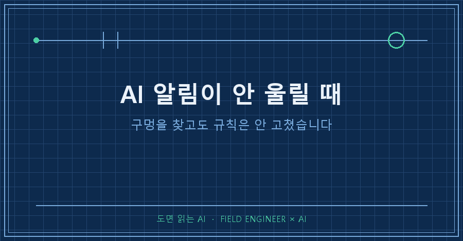
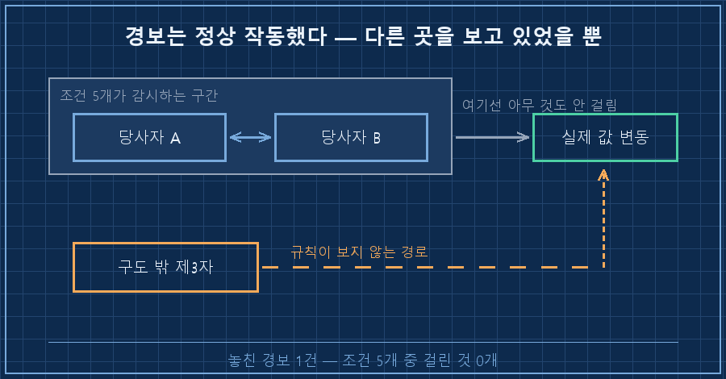
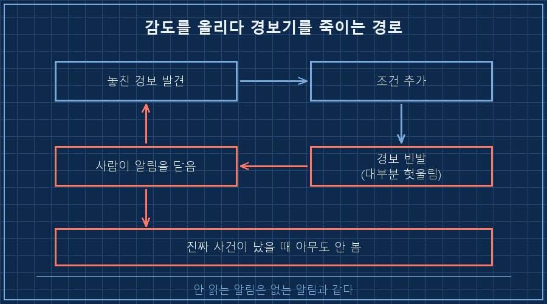
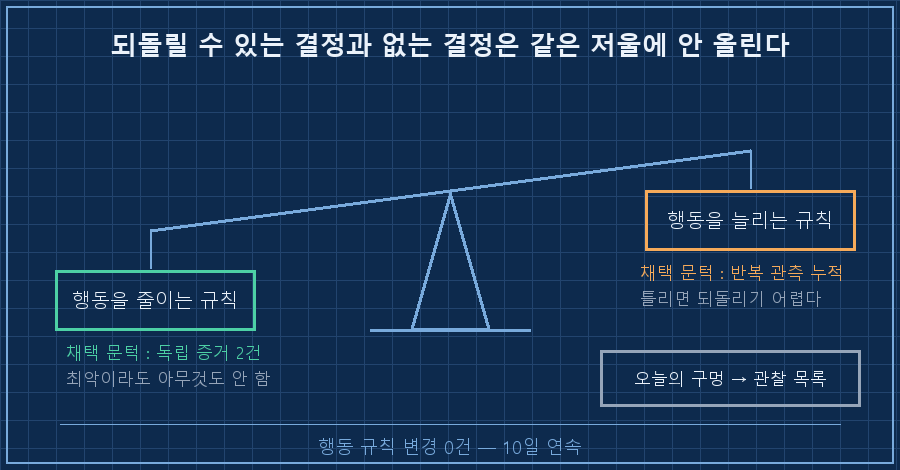

AI 알림이 안 울릴 때가 있어요. 제 개인 자동화에는 위험 감시용 경보가 하나 붙어 있는데, 조건 다섯 개 중 하나라도 걸리면 아침 문서 맨 윗줄에 빨간 표시가 뜹니다.
오늘 아침에 열어보니 바깥에서 값을 꽤 흔든 사건이 하나 났는데, 조건 다섯 개는 전부 조용했더라고요. 경보가 사건을 그냥 지나친 겁니다..
먼저 답부터 적을게요.
AI 알림이 안 울릴 때 제일 먼저 하고 싶어지는 일이 조건 추가인데, 그게 보통 알림 자체를 죽입니다. 조건을 늘리면 경보가 자주 울리고, 자주 울리면 사람이 화면을 안 봐요. 그래서 오늘 찾은 구멍은 규칙에 넣지 않고 관찰 목록에만 적어뒀습니다.
2026년 9월 기준이고, 매일 새벽에 혼자 도는 개인용 자동화에서 나온 얘기예요. 대상이 뭐든 AI한테 매일 뭔가를 감시시키는 구조면 똑같이 생기는 문제입니다.
설비 쪽 일을 십오 년쯤 했는데, 현장 화면에 알람이 수백 줄씩 흐르는 판을 여러 번 봤어요. 알람이 많은 판일수록 사람들이 알람 창을 접어둡니다. 게을러서가 아니라 그렇게 안 하면 일을 못 하거든요..
1. 조건 다섯 개가 전부 안 걸렸습니다
오늘 문서 상단은 이렇게 찍혀 있었어요.
# 실제 문서의 상태 줄을 익명화해 옮긴 것입니다
[경보] 8일째 유지 — 충족 조건 0개 (해제 카운트 1/5일)
[검증] 놓친 경보 1건 — 실제 사건이 조건 5개 어디에도 안 걸림
[조치] 규칙 변경 없음 / 관찰 목록에 1건 신설경보 표시는 8일째 켜져 있는데, 정작 오늘 값을 움직인 사건은 그 경보와 무관하게 지나갔습니다. 걸려 있던 조건은 오늘 0개가 됐고요. 표시가 아직 남아 있는 건 한 번 켜지면 닷새를 더 보고 끄도록 해뒀기 때문이에요.
이유는 열어보니 단순했어요. 제 조건 다섯 개는 전부 당사자 둘 사이의 충돌을 기준으로 짜여 있었습니다. 그런데 오늘 값을 흔든 건 그 둘이 아니라, 구도 바깥의 제3자가 다른 쪽 시설을 건드린 경로였어요. 규칙이 사진 한 장만 들여다보고 있었던 셈입니다.
여기서 손이 근질거립니다. 조건 여섯 번째를 추가하면 되잖아요. 십 분이면 되고요.

2. 촘촘하게 만들면 2주 뒤에 꺼집니다
제 자동화가 오늘 문서에 적어둔 비유가 하나 있는데, 이게 제 손을 멈추게 했어요.
집에 화재경보기를 답니다. 연기를 감지하죠. 그런데 어느 날 화장실에서 물이 새서 마루가 다 젖었어요. 경보기는 안 울립니다. 당연하죠, 연기 감지기니까요.
여기서 길이 둘로 갈립니다. 하나는 "이 경보기 쓸모없네" 하고 물·가스·지진·침입까지 다 잡는 만능 경보기로 바꾸는 길이에요. 다른 하나는 물난리는 이 경보기 소관이 아니라고 인정하고 그냥 두는 길이고요.
앞쪽을 택하면 어떻게 되냐면, 라면 끓일 때 울고 샤워할 때 울고 트럭 지나갈 때 웁니다. 2주 뒤에 배터리를 뽑게 돼요. 그리고 진짜 불이 났을 때 그 경보기는 조용합니다. 감도를 올리다가 경보기를 죽인 거죠.
AI 알림이 안 울릴 때 조건부터 늘리는 건 저도 이미 한 번 밟아본 함정이에요. 알림을 촘촘하게 걸어두면 처음 사흘은 꼼꼼해 보이는데, 2주쯤 지나면 알림함을 안 열게 됩니다. 안 읽는 알림은 없는 알림이랑 같아요.

그래서 이번엔 실제로 8일 동안 무슨 일이 있었는지부터 세봤습니다.
| 8일간 실제로 일어난 일 | 숫자 |
|---|---|
| 경보가 켜져 있던 날 | 8일 연속 |
| 그동안 기준 지수가 움직인 폭 | -0.39% |
| 자동화가 내린 조치 지시 | 0회 |
| 그 8일이 실제로 발생시킨 비용 | 0원 |
빨간불이 여드레 켜져 있는 동안 값은 0.4%도 안 움직였어요. 만약 제 규칙이 "빨간불이면 정리한다"였다면, 저는 0.4% 때문에 다 팔고 수수료를 내고 언제 돌아올지 모르는 상태가 됐을 겁니다. 실제 규칙은 "빨간불이면 알리기만 한다"였고, 그래서 여드레 값은 정확히 0원이었어요.
경보의 목적은 위험을 100% 잡는 게 아니라, 위험이 왔을 때 제가 즉흥적으로 움직이지 않게 하는 것이더라고요. 이걸 인정하고 나니까 오늘 발견한 구멍의 급이 달라 보였습니다.
3. 고칠 규칙과 미룰 규칙을 나누는 문턱
그래서 규칙을 두 종류로 나눠 문턱을 다르게 뒀어요. 이게 오늘의 결론입니다.
| 규칙의 종류 | 예 | 채택 문턱 | 이유 |
|---|---|---|---|
| 행동을 줄이는 규칙 | "이 종류 숫자는 판단 근거로 안 쓴다" | 독립 증거 2건이면 채택 | 최악이라도 아무것도 안 하게 될 뿐 |
| 행동을 늘리는 규칙 | "이런 신호면 움직인다" | 훨씬 높게 (반복 관측 누적) | 틀리면 실제로 손해가 나고 되돌리기 어렵다 |
오늘 찾은 구멍을 조건에 넣으면 경보가 더 자주 켜집니다. 즉 행동을 늘리는 쪽이에요. 증거는 오늘 하루치고요. 그래서 규칙이 아니라 관찰 목록에 한 줄로 올렸습니다.
# 관찰 목록에 오늘 추가된 항목 (문구는 익명화)
㉨ [신설] 경보 조건이 당사자 양자 구도로만 짜여
구도 밖 제3자를 경유하는 경로를 못 잡음
상태 : 관찰만. 행동을 늘리는 방향이므로
하루치 증거로는 규칙 승격 불가며칠 전에 같은 자동화가 반대 결정을 한 적이 있어요. 자기 예측이 이틀 연속 빗나가자 그 자리에서 "예측을 쓰지 않는다"는 규칙을 만들었거든요. 그건 행동을 줄이는 쪽이라 하루 만에 채택했고, 오늘 건은 늘리는 쪽이라 몇 달을 봅니다. 같은 날 발견한 문제라도 어느 방향이냐에 따라 처리 속도가 달라야 한다는 게 이번에 정리된 부분이에요.
덧붙이면, 규칙을 고치더라도 과거 판정을 소급해서 바꾸지는 않습니다. 오늘 안 사실로 어제 판정을 다시 쓰기 시작하면 기록이 통째로 물러져요. 어제 판정이 나흘 묵은 데이터에 기대고 있었다는 것도 오늘 알았는데, 그건 고치지 않고 그대로 적어뒀습니다.

여러분은 알림이 한 번 헛나가거나 한 번 놓쳤을 때, 조건을 바로 손보시는 편인가요? 저는 이번에 처음으로 안 고치는 쪽을 택해봤어요.
미리 답해두면 좋을 두 가지
Q. 구멍을 알면서 그냥 두는 게 위험하지 않나요?
그냥 두는 게 아니라 급을 낮춰 적어두는 거예요. 관찰 목록에는 지금 여섯 건이 올라 있고, 매일 아침 문서에 상태가 같이 찍힙니다. "몇 달째 관찰 중"이라고 계속 눈에 걸리게 해두는 거죠. 조건에 넣는 것과 목록에 적는 것의 차이는 경보가 울리느냐뿐이고, 잊히지 않는다는 점은 같습니다. 목록에서 빠지면 그때가 진짜 방치예요.
Q. 그럼 규칙은 언제 고치나요?
같은 경로로 실제 손해나 사고가 났을 때요. 저는 이걸 "하루치 증거"와 "반복 관측"으로 구분해 씁니다. 놓친 경보 한 건은 아직 이야기 한 편이고, 같은 이야기가 서너 번 반복되면 그때 규칙이 됩니다. 참고로 제 자동화는 지금 행동 규칙 변경 0건을 10일째 이어가는 중인데, 이 0이 게으름이 아니라 문턱이 작동한다는 표시예요.
정리하면 오늘 한 일은 규칙 수정이 아니라 각도 확인이었어요. 규칙을 촘촘하게 만드는 것과 규칙이 보는 각도를 넓히는 건 다른 일이더라고요. 앞쪽은 경보를 시끄럽게 만들고, 뒤쪽은 경보를 똑똑하게 만듭니다. 구멍을 찾고도 안 고친 게 오늘 제일 잘한 일이었네요!
고치지 않기로 한 것들 목록도 makefield.ai에 같이 쌓아두고 있어요.
태그: #AI알림 #AI알림안울릴때 #자동화경보 #알림놓침 #AI감시규칙 #AI규칙설계 #알림피로 #자동화모니터링 #AI에게일시키기 #AI판단검증 #AI결과물검수 #자동화브리핑 #AI에이전트 #개인AI에이전트 #도면읽는AI